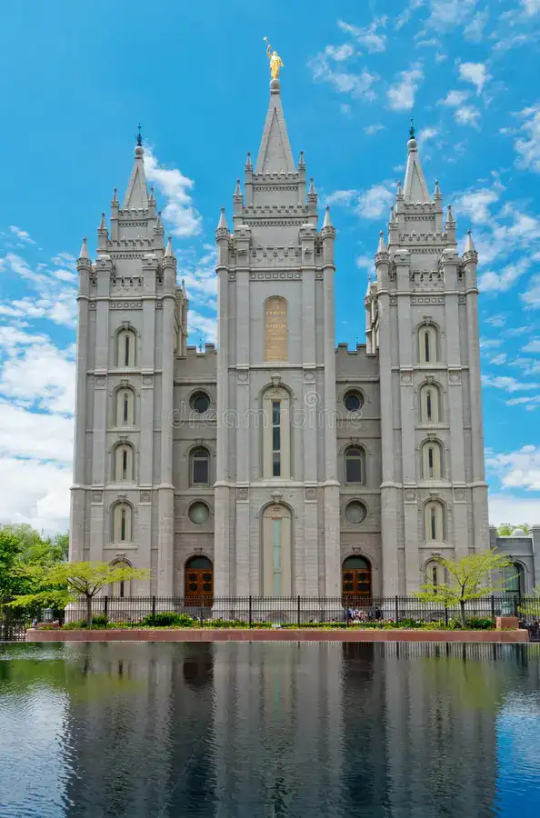
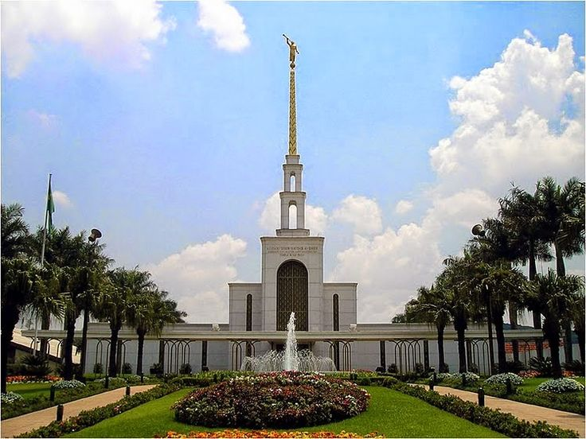
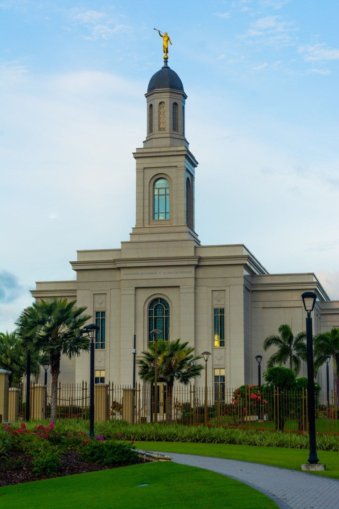

Galeria de Templos
 Templo de Salvador Brasil
Templo de Salvador Brasil

Templo de Salt Lake

Templo de São Paulo Brasil
Templo de Curitiba Brasil
Templo de Manaus Brasil

Templo de Fortaleza Brasil
Templo de Rio de Janeiro Brasil
Templo de Brasília Brasil
Templo de Belém Brasil